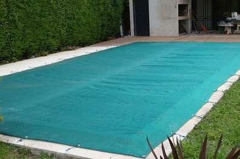
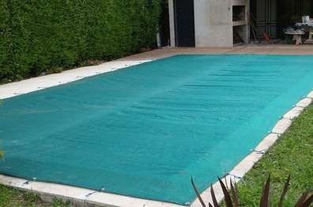
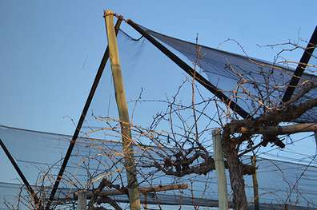

Media Sombra para el Hogar

Se utiliza en el hogar cubrimiento de tejidos, piletas, quinchos, galpones, para pequeños invernaderos caseros.

Se utiliza en el hogar cubrimiento de tejidos, piletas, quinchos, galpones, para pequeños invernaderos caseros.

Cubierta practica y económica para estacionamientos. La media sombra al 90% es la mas utilizada por supermercados, lavaderos, galpones, tranposrtes de carga y descarga

Mayormente se utiliza la media sombra al 50% con ella ingresa la luz solar y a su vez protege sus cultivos del sol, de la piedra, en incluso de los pajaros.